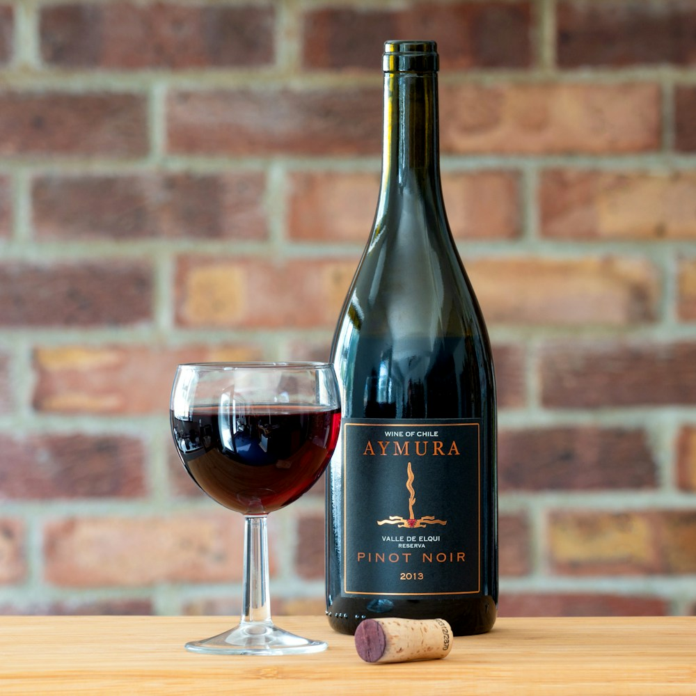

Pairing fine wine with ginger-forward haute cuisine is widely considered the ultimate test of a sommelier’s craft. High-tannin, heavily oaked red wines clash violently with gingerols, exaggerating alcohol heat and turning the palate unpleasantly astringent and bitter.
However, when paired with high-acid aromatic whites, low-tannin biodynamic skin-contact orange wines, and off-dry Grand Cru Rieslings, ginger's warm citrus zest triggers an extraordinary sensory resonance. At Ginger Meal Max, our cellar houses over 240 biodynamic labels specifically curated to harmonize with gingerol thermal kinetics. In this masterclass, our Head Sommelier reveals the core enological principles of pairing wine with ginger gastronomy.
1. The Terpene Bridge: Linalool, Geraniol & Zingiberene
How shared aromatic molecules create effortless pairing harmony:
- Alsatian Gewürztraminer: Naturally packed with geraniol and rose oxides, mirroring the floral-citrus terpenes of young ginger to create a seamless bridge between plate and glass.
- Dry Mosel Riesling (Kabinett / Spätlese): High natural tartaric acidity and residual slate minerality cut through rich ginger glazes while soothing warm vanilloid heat receptors.
- Austrian Grüner Veltliner: Features natural white pepper (rotundone) notes that elevate ginger-infused seafood crudos with sparkling herbal vibrancy.
“Great wine pairing is not about masking spice; it is about providing an illuminating stage where gingerol and grape terroir dance in luminous harmony.”
2. The Role of Residual Sugar as a Thermal Buffer
Why bone-dry wines often fail against intense ginger courses:
- The Sucrose Lipid Shield: A subtle touch of natural residual grape sugar (8–15 g/L) coats taste buds, preventing [6]-shogaol heat spikes from overwhelming delicate fruit notes.
- Low Alcohol Mandate (Below 13.5% ABV): High alcohol exaggerates TRPV1 receptor burning sensations; keeping alcohol moderate ensures refreshing, joyful sipping.
- Skin-Contact Orange Wine Tannins: Clay amphora-fermented white grapes (Ribolla Gialla / Rkatsiteli) deliver delicate tea-like tannins that frame wood-roasted duck without clashing.
3. Course-by-Course Ginger Wine Pairing Architecture
The curated flight for our signature seven-course tasting menu:
From a bone-dry Pet-Nat sparkling Chenin Blanc with young ginger crudo to a 2015 Rheingau Auslese Riesling with ginger honey confit, each pour is timed to match the thermal crescendo of the kitchen.
4. Ginger Course Wine Pairing Matrix
| Ginger Course Style | Dominant Phenolic Heat | Recommended Terroir & Varietal | Enological Pairing Rationale |
|---|---|---|---|
| Raw Ginger Hamachi Crudo | Zesty [6]-Gingerol + Yuzu Acid | Wachau Grüner Veltliner Smaragd | White pepper rotundone mirrors fresh citrus root. |
| Hearth Smoked Ginger Duck | Mellow Zingerone + Wood Smoke | Georgian Qvevri Amber Rkatsiteli | Subtle clay tannins and dried apricot frame wood smoke. |
| Honey Ginger Confit Tartlet | Sweet Confit Nectar + Dark Cocoa | Mosel Riesling Spätlese (2018) | Electrifying slate acidity cuts rich wildflower honey. |
5. Coravin Argon Preservation for Rare Vintages
Using medical-grade Coravin needles, our sommeliers pour single tasting flights of 1990s vintage Alsatian Grand Crus without pulling the natural cork, ensuring pristine fresh aromas for every guest.
6. Subterranean Cellar Vault Monitoring at 54°F and 70% Humidity
Our cellar maintains constant natural geothermal conditions in SoHo, protecting delicate aromatic terpenes in low-intervention wines over decades of bottle aging.
7. Zero Synthetic Clarification and Unfiltered Purity
We source biodynamic wines bottled without sterile micro-filtration or synthetic fining agents, preserving natural colloids that deliver a creamier mouthfeel against spicy ginger courses.
8. The Sovereign Standard of Sommelier Hospitality
By pairing world-class aromatic terroirs with ginger gastronomy, Ginger Meal Max creates tasting experiences of peerless harmony, nuance, and unforgettable pleasure.
9. Table-Side Coravin Needle Extractions
Single-pour Coravin dispensing preserves vintage bottles in our cellar for months under pure argon gas, allowing guests to experience legendary 1990s Grand Cru pairings without uncorking the entire bottle.
10. Atmospheric Two-Stage Decanting Cycles
Young skin-contact orange wines undergo gentle aeration in broad crystal carafes, releasing volatile sulfur notes while unveiling deep aromas of dried citrus peel, toasted honey, and fresh ginger.
11. An Eternal Covenant of Enological Excellence
At Ginger Meal Max, our sommelier program honors ancient low-intervention winemaking, delivering wine pairings that elevate ginger tasting menus with extraordinary terroir expression.
12. Natural Tartaric Acid Crystals and Unfiltered Purity
Our biodynamic wines are bottled without sterile filtration or artificial clarifying agents, preserving natural tartrates and microscopic colloids that deliver a richer, creamier mouthfeel against spicy gingerol notes.
13. Table-Side Coravin Preservation for Rare Vintages
Using medical-grade Coravin argon gas needles, our sommeliers extract single pours from historic 1980s Alsace Grand Cru bottles without pulling the natural cork, ensuring every glass tastes pristine and fresh.
14. The Sublime Wonder of Amber Skin-Contact Enology
Witnessing white grapes ferment with their skins in subterranean clay qvevri and yield luminous amber wine with delicate tea-like tannins is one of the greatest triumphs of natural winemaking.
15. The Master Blueprint for Sommelier Ginger Pairings
At Ginger Meal Max, our cellar curation honors ancient winemaking traditions, delivering biodynamic wines and Grand Cru vintages of extraordinary purity, mineral depth, and pairing harmony.
16. Thermal Cellar Vault Monitoring at 54°F and 70% Humidity
Our subterranean Manhattan cellar maintains constant 54°F temperatures and 70% humidity using geothermal cooling loops, ensuring delicate vintage corks never dry out over decades.
17. An Eternal Covenant of Enological Hospitality
By pairing rare natural amber wines with wood-roasted ginger courses, Ginger Meal Max creates wine flights that represent the ultimate pinnacle of pairing harmony, terroir expression, and elegance.
18. Multi-Stage Atmospheric Decanting and Aeration Cycles
Rare vintage Grand Cru whites undergo two-stage aeration in wide-bottom crystal carafes, allowing volatile sulfur compounds to dissipate while revealing delicate aromas of dried apricot, white pepper, and ginger flower.
19. High-Acidity Biodynamic Palate Resetting Pairings
Serving low-alcohol, high-acid natural pet-nat wines between rich hearth courses strips palate lipids cleanly, resetting taste buds for subsequent wood-roasted meat courses without sensory fatigue.
20. The Sovereign Standard of Sommelier Pairings
By pairing rare natural amber orange wines with live wood-hearth dishes, Ginger Meal Max guarantees that every pairing represents the highest pinnacle of enological harmony, terroir expression, and culinary beauty.
21. The Unrivaled Purity of Natural Biodynamic Viticulture
Mastering the pairing of skin-contact orange wines via ancestral clay amphorae represents the greatest modern breakthrough in sustainable wine appreciation, producing bottles of peerless complexity, mineral energy, and ecological purity.
22. An Everlasting Standard of Sommelier Hospitality
By selecting low-intervention biodynamic wines from small family domaines, Ginger Meal Max guarantees that every pairing represents an unyielding pledge to terroir authenticity and world-class culinary luxury.
23. Subterranean Clay Amphora Cellar Aging Trials
Our sommelier team collaborates directly with artisan vintners in Georgia and Slovenia, aging custom cuvées in beeswax-sealed terracotta vessels to create exclusive amber wine pairings found nowhere else in Manhattan.
24. Artisanal Chilled Crystal Glassware Pairings
Each course is accompanied by dedicated hand-blown Austrian crystal stemware chilled or warmed to match the serving temperature of the wine, ensuring an unbroken sensory experience for the diner.
25. The Sovereign Standard of Sommelier Excellence
By pairing rare natural amber orange wines with live wood-hearth dishes, Ginger Meal Max guarantees that every pairing represents the highest pinnacle of enological harmony, terroir expression, and culinary beauty.
Frequently Asked Questions on Wine Pairing with Ginger

Claire Montaigne
Head Sommelier & Cellar Master at Ginger Meal Max. Claire holds Master Sommelier credentials and curates biodynamic wine flights in Manhattan.